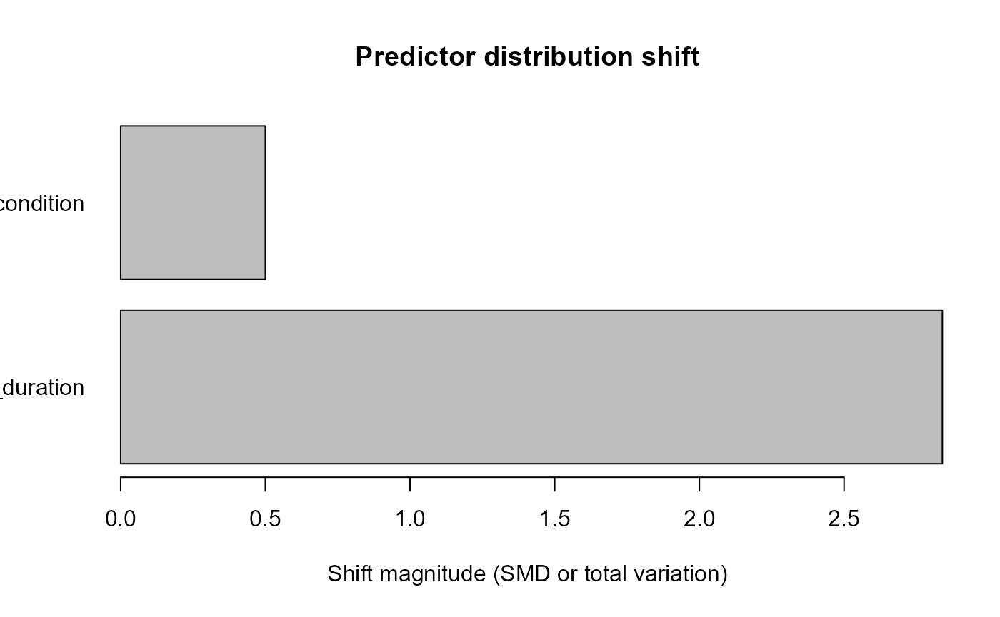

Dataset Shift and Robustness Auditing
Source:vignettes/dataset-shift-and-robustness.Rmd
dataset-shift-and-robustness.RmdDataset shift is not one scalar drift score. gp3ml keeps predictor-distribution shift, missingness shift, prevalence shift, calibration drift, and performance degradation conceptually separate.
development <- data.frame(
fixation_duration = 180 + 1:30,
condition = rep(c("A", "B"), 15)
)
external <- data.frame(
fixation_duration = 205 + 1:30,
condition = rep(c("A", "C"), 15)
)
shift <- audit_gazepoint_dataset_shift(
development,
external,
predictors = c("fixation_duration", "condition")
)
missingness <- audit_gazepoint_missingness_shift(
development,
external,
predictors = c("fixation_duration", "condition")
)
summarize_gazepoint_shift(shift, missingness)
#> $dataset_shift_status
#> [1] "fail"
#>
#> $dataset_shift_counts
#> status n_predictors
#> 1 fail 2
#>
#> $missingness_shift_status
#> [1] "pass"
#>
#> $missingness_shift_counts
#> status n_predictors
#> 1 pass 2
#>
#> attr(,"class")
#> [1] "gp3ml_shift_summary"
plot(shift)
Robustness diagnostics should examine dependence on seeds, folds, features, thresholds, missingness scenarios, and other declared analytical choices rather than relabelling one successful analysis as robust.